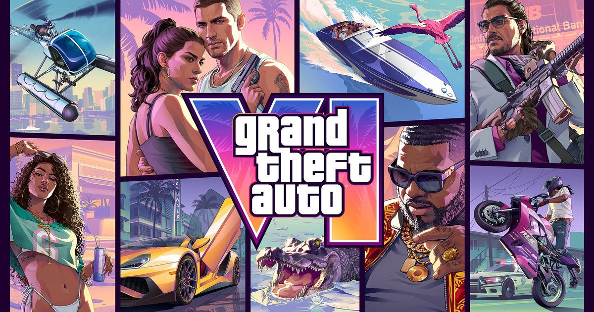

Every GTA 6 Easter egg found so far — UFO abductions, a Hunger Games island, Bigfoot, and a hotel that turns into Silent Hill
GTA 6 has been out five days and players have already found a UFO that abducts you, a secret island where you're hunted for sport, Bigfoot in the swamps, a hotel that turns Vice City into Silent Hill, Dexter's apartment, and a lot more. Here's every confirmed one, where to find it, and what you get.

Disclosure: this post contains affiliate links. I earn a commission on qualifying purchases.
GTA 6 has been out five days, and the Easter egg hunt has already become its own game inside the game. Players have found a UFO that carries you off, a secret island where strangers hunt you for sport, Bigfoot in the swamps, a hotel that turns Vice City into Silent Hill, and a house Rockstar has been teasing since 2021. None of it is in any official guide. All of it is in the game right now.
Every egg below has been confirmed by at least two independent sources — guides, outlets, or the creators who found them on camera. Anything still unconfirmed is left out. This list will keep growing, and we'll update it as more turns up.
The UFO abduction — and the alien rescue after it
The big one. On a rural road near the Starlet Motel in Kelly County, east of Port Gellhorn, a UFO shows up at night — around 2 AM in-game, once the story has reached its second chapter. Look for a car left at the roadside with its lights on. A trail leads from it into the woods, clothes scattered along the way, to a beam of light holding a woman in the air. Walk up and the craft lets her go. Talk to her, she asks you to fetch her car, and on the way back the UFO comes back — this time for you.
You wake up three in-game days later to a worried phone call from your partner, and the encounter unlocks The Truth Is Out There, a bronze trophy on PS5 and an achievement on Xbox. If the car isn't there, leave the area and come back another night.
That's only the first part. Keep playing as the character who was taken, and keep going to bed: sooner or later you wake up inside the ship, in a white room, and the dream is a small puzzle — sneak past a room full of eggs, read a model of the solar system, work out a keypad code, match the lights on a control panel, and carry a bottle of milk from one room to a machine in another. The place from the dream is real: a restricted site in the south of the state, where the same keypad code opens the door. Solve it again for real and the machine releases a live alien. Carry it outside and its ship comes to collect it. Your reward is a permanent boost to health, stamina, and Focus.
Streamer ZLANER stumbled into the abduction completely by accident on stream, which is how most players are going to find this one — by driving a dark road at the wrong hour.
The Hunger Games secret island
This is the one ZLANER went back for on purpose. On Hyde Island — GameByte points to the south-west part of it — players are getting kidnapped and thrown into a survival hunt. The exact trigger is still unclear; exploring that area at night seems to be the way in. ZLANER found it after hearing about it on TikTok and going to look.
Here's what happens: you wake up in a red-lit container with an explosive collar around your neck and a voice telling you that if you try to leave the island, your head will try to leave your body. "Welcome to the hunt," the voice says, and a countdown starts. There are outposts scattered around the island with guns and ammunition, and hunters moving through the woods with torches, laser sights, and night-vision goggles — plus dogs in tactical vests. The on-screen objective is one word: Survive.
ZLANER fought his way through it on camera — out of ammo more than once, one bullet from dead — and when the last hunter went down, the announcement came: "Congratulations to the winner, contestant 22." The prize is waiting at a boathouse on the western shore of the island, where you reclaim your personal items along with a $20,000 cash prize and the Island Poacher FF-50 sniper — a .50 cal — plus the hunter's knife. GamingBible notes the whole thing reads as a nod to Rockstar's own Manhunt, the 2003 game where a man is filmed surviving hunters in the dark. The security cameras, the countdown, and the rich people watching it all for sport make the connection hard to miss.
The Skunk Ape — Bigfoot is in the swamps
Bigfoot is back, under his Florida name. The Skunk Ape lives in the swamps of southern Leonida, around Gullet Marsh and south of Cottonmouth Lake. The first sighting comes early — after the first mission — on a dirt road where the creature is feeding on a deer carcass. Chase it into the trees and you lose it, then find a figure tied to a tree. Examine it and your character passes out, waking up by the lakeside with the ape having carried you there.
The sighting opens a full side mission. Flyers asking whether anyone has seen a skunk ape are posted around Leonida from the first chapter; reading one adds a cryptid hunter named Kirk to your phone, and he sends you on Search for the Skunk Ape. The mission only runs at night. Other players report the creature further north too, in the Grassrivers and around Cottonmouth Lake, near effigies made of straw and rope. If you find one of those in the woods, stay a while and listen.
The literal Easter egg on Vice City's tallest tower
Rockstar took the expression at its word. At the top of the tallest radio tower in Vice City sits a bird's nest holding brightly coloured eggs. Getting there is the hard part: about seven minutes of ladders, with nothing to catch you if you slip.
Once you're up, Jason or Lucia can pick an egg out of the nest and throw it off the tower. That throw triggers a short hidden cutscene. There is no reward beyond the scene itself — it's a pure joke, and it carries on a series tradition, since the original Vice City hid a chocolate Easter egg in a secret room back in 2002. One warning: an influencer is sometimes vlogging at the top, and if they're there you can't use the parachute to get down, even if you take them out. You'll be climbing back down.
The Marbelle Hotel turns Vice City into Silent Hill
The creepiest find so far. The Marbelle Hotel is an abandoned building in southern Crosstown, Vice City, on NW 8th Street near the Nine1Nine nightclub. The main entrance is blocked, so head around and enter through the back door. Inside there's a locked safe on the ground floor and a staircase leading up — and as you climb, mannequins face the corners, doors open on their own, the lights flicker and die, red symbols appear across the walls, and whispers play. Step out onto the roof and Vice City is covered in thick fog and darkness, a straight recreation of Silent Hill's atmosphere.
The safe code is 955214 — you'll find it painted on the wall during the sequence and again in an Old Note on the rooftop. The ground-floor safe holds cash and a Crowex Ambassador 'Breakfast' luxury watch, and opening it clears the fog. It can also unlock The Truth Is Out There trophy if you haven't earned it at the UFO yet. Grab the collectible comic card on the cabinet opposite the staircase before you leave. The event only triggers once, so take it all in the first time.
Dexter's apartment
Fans of the TV series Dexter spotted this one in the very first trailer, and it's in the finished game. The Trinity Apartments stand on Washington Island, in the north-east of Vice City, near the Pay 'N' Spray and Vice Beach Top Fun Drones markers. You can't go into the apartment itself, but the roof is worth the climb: a kit is laid out up there that fans of the show know well — syringes, a knife, rope, and a toolbox. Moored at the dock nearby is a boat that looks very much like the one Dexter uses in the show.
The Belville house Rockstar teased in 2021
This one took five years to solve. In 2021, players of the remastered San Andreas noticed a photo on the wall of the Lil' Probe'Inn bar: a suburban house with two palm trees, which matched no known Rockstar game. Fans guessed it was the first image of GTA 6. They were right.
The house stands in Belville, in Leonard County — cream coloured, attached garage, two palm trees out front, everything matching the old photo. The garage is worth breaking into. Inside is the den of a conspiracy theorist who has worked out that he lives in a video game: his notes say he cannot buy a plane ticket to Los Santos or drive past the state line, that some people around him look identical, and that two people known only as J and L do not seem bound by the same rules.
The Fast and Furious car
A garage on Vespucci Island, among the residential islands of Vice City, holds a bright green tuner car that film fans recognise at once: a close copy of Paul Walker's 1995 Mitsubishi Eclipse from the first The Fast and the Furious, down to the paint, the graphics, and the big rear wing. It is not a prop. Get into the villa garage and you can drive the car away, then register it at a Pay 'n' Spray to keep it as a permanent vehicle for Jason and Lucia.
Cool Dog, the jet ski rescue dog
Swim or sail too far out to sea, get stranded, and you will hear barking. A dog in goggles arrives on his own jet ski to pick you up and bring you back to shore. Players have named him Cool Dog, and Gambit Bay is an easy place to try it. Stay on the jet ski instead of getting off at the beach and he carries on to a small sandy island where other dogs are waiting — and there he digs up a little cash for you, around $1,200. He seems to have a real model: a golden retriever filmed riding a jet ski in Florida in 2025.
The giant crab of Gullet Marsh
Gullet Marsh hides more than the Skunk Ape. At an isolated outpost in the marsh — an abandoned research station in Pelican Valley — switch the power back on at the breaker box outside, then go in and read the journal on the computer. There's a password clue in the scientist's bedroom; enter it on the computer to access the research notes. When you step away from the screen, a giant mutant crab jumps on your character and you have to fight it off. Players read it as a nod to a famous moment of gaming history: the giant enemy crab shown on stage at a 2006 console presentation, which became one of the first big gaming memes.
The demon ritual in Capri
The darkest secret found so far. In the north of Capri, near Tortoise Lake, a warehouse the map does not mark hides a pentagram drawn on the floor, with the outline of a body in the middle. The ritual asks for what the drawing suggests: knock out a passer-by, carry them in, and lay them on the pentagram. The lights go out, you hear your partner calling from the next room, and the scene turns into a short horror sequence. Get past the hallucinations and burn the demon with molotov cocktails or gasoline to escape — and doing so earns The Truth Is Out There trophy. Go at night, and save first.
The talking parrots
Walk into a liquor store in the Leonida Keys and you can land in the middle of a brawl, with several angry men on one side and a row of talking parrots cheering you on from the other. Win the fight and listen: one of the parrots says the word "generator." Check the generator nearby and you find a stash of cash. Long-time players see a nod to Tony, the talking parrot of San Andreas.
The Monument of Leonidan Supremacy — the one nobody has solved yet
This is the one players hope turns into the next Mount Chiliad. In Manifest Canyon, in Kelly County, west of SR-73 and north of Port Gellhorn, stands a monument made of a pillar, a globe, and four stallions. Its plaque explains, with a straight face, that the horses stand for the four pillars of Leonidan culture: wildlife, corruption, humanity, and yeyo. One of the horses is wearing a traffic cone.
What caught attention is what happens around it: players say the controller starts to vibrate near the statue, and it beeps in a pattern that could be Morse code. Each horse carries a different symbol, and nobody has decoded anything yet. Fair warning before you go down the rabbit hole: the vibration and beeping are most likely just the WAiNK app's proximity alert — the monument is WAiNK Sculpture #23, and every unscanned collectible makes the same noise until you scan it. The symbols, though, are still unexplained. This one stays open.
Niko Bellic is back (spoiler warning)
Stop here if you haven't finished the story. GTA 4's Niko Bellic makes a surprise cameo in the final chapter of GTA 6, in the mission Taking Liberties. He's older now — grey hair, jacket, jeans, black turtleneck, gold chain — and original voice actor Michael Hollick reprises the role, credited in the game simply as "The Hitman" to preserve the surprise. He crosses paths with Jason and Lucia twice in Chapter 5, mentions he hasn't killed anyone since 2012, and heads back home to Liberty City when it's done. It's one of the biggest moments in the whole game, and Rockstar kept it secret until players found it themselves.
Familiar voices on the radio
Weird Al Yankovic is DJ Al on Vice City FM, alongside Brigitte Nielsen as Madame Brigitte — and he also helped write some of the in-game commercials and voices the Burger Shot ads. Kodak Black appears as himself, as an NPC in the Jack of Hearts club and as host of The Sniper of La Perle, a secret station you unlock by scanning four posters scattered across La Perle and Crosstown. The radio lineup is stacked with real musicians and comedians, but those two are the ones players keep doing double-takes over.
The Rockstar callbacks
Leonida is full of small reminders that the other Rockstar games happened in the same world. The boat moored near Jason's house is the yacht stolen from Michael De Santa in GTA 5 — step aboard and look at the navigation screen, and it shows the map of Los Santos, not Leonida. And Arthur Morgan's iconic cowboy hat from Red Dead Redemption 2 can be found at a yard sale in southern Port Gellhorn, sitting on a guitar case atop a couch in a driveway full of sale items northwest of the Dirt Merchants mod shop.
And the Mario hats
We already covered this one on its own because it deserved the spotlight: deep in the woods of Lummox County, a bong, a floating block, and a familiar jingle hide a red cap with a "J" for Jason and a green cap with an "L" for Lucia. Read the full story here: GTA 6 hides a Mario and Luigi Easter egg — and you have to get high to find it
What have you found?
Five days in, and the list is already this long — and players are finding more every day. Found one we missed? Tell us what it is and where you found it in the comments. If it checks out, we'll add it to the list.
Sources: GTA 6 Easter Eggs and Secrets: All 14 Found So Far (GTAside) · All Easter Eggs and Secrets | GTA 6 (Game8) · GTA 6 Hunger Games Secret Event (GameByte) · I Got Hunted on a Secret Island in GTA 6 (ZLANER) · The UFO Easter Egg in GTA 6 is CRAZY (ZLANER) · 5 Most Exciting GTA 6 Easter Eggs Players Have Found After Launch Day (ComicBook) · GTA 6 Marbelle Hotel Easter Egg: Location and Silent Hill transformation (Dexerto) · Where to find the Silent Hill hotel in GTA 6 (Polygon) · Where To Find The Marbelle Hotel Safe Code In GTA 6 (TheGamer) · GTA 6 Easter Eggs: 8 Secrets and Where to Find Them (NerdSnack) · GTA 6 easter eggs and secrets explained (The GTA 6 Map) · Monument of Leonidan Supremacy GTA 6 Clues Solved (RetroBroker) · GTA 6 Monument of Leonidan Supremacy: Lightning, Morse Code and More (Middle East Gamer) · Is Niko Bellic in GTA 6? (esports.gg) · Does Niko Bellic Return in GTA 6? (ComicBook) · All the 'Grand Theft Auto 6' radio hosts (NME) · GTA VI Unveils Soundtrack Album, Game Includes Surprise Songs And Cameos (Stereogum)
Watch
Source: Grand Theft Auto VI Launch Trailer (Rockstar Games) — the official launch trailer, released October 15, 2026, 90 seconds of in-game footage captured on PS5, set to Justice's "Flower in a Hurricane."
Gear up: Razer — mice, keyboards, headsets and laptops.